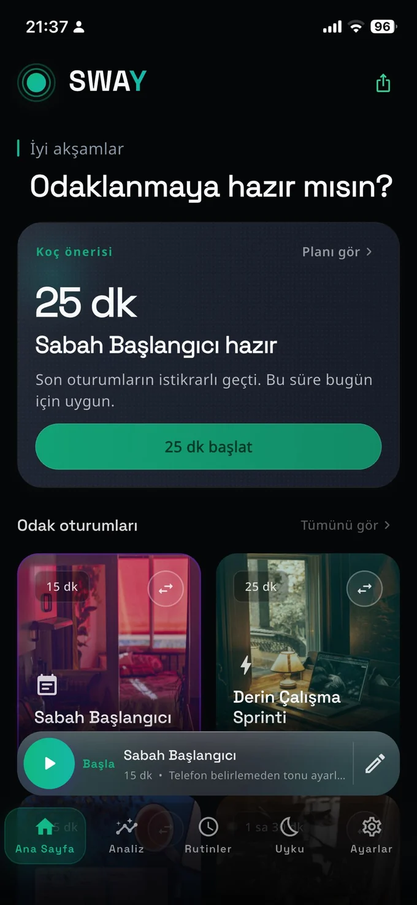
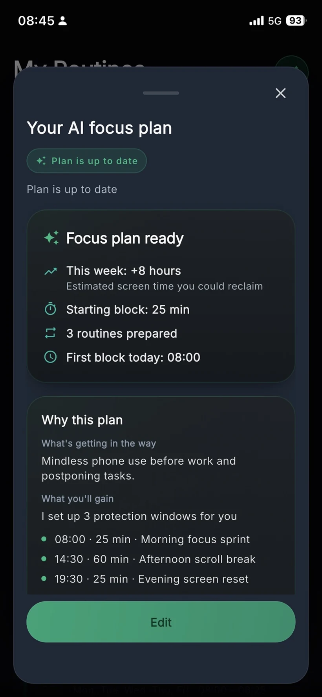
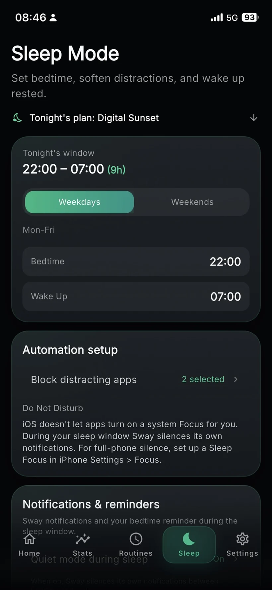

Home
Coach pick, focus sessions, and mini player.
Sway is an AI focus coach that helps you build realistic routines, block distractions when needed, and start working without the pressure.

Sway doesn't lock your phone; it creates a daily flow that survives real life. A morning focus block, an afternoon scroll break, an evening screen reset. Simple to start, flexible enough to keep.
Your AI coach suggests a focus plan based on your day. You stay in control—review the suggestion, edit your blocks, and let Sway handle the boundaries.

These screens are symbolic previews from the current build. The final App Store release may refine layout, copy, and features.
Coach pick, focus sessions, and mini player.
Coach analysis without pressure.
A practical plan for the day.
Clear plan, visible reasons, user control.

Bedtime windows and softer distractions.
Sway does not try to shame you into discipline. It helps you start again with a small, usable next step.
Focus routines are easier when they match your real day. Sway turns intention into scheduled rhythm.
AI suggestions stay short, calm, and actionable so the product feels like a coach, not a dashboard.
Sway is designed to minimize sensitive data sharing and avoid sending raw screen time details to AI. Coaching should rely on limited context and the goals you choose.
Short answers for early users, testers, and App Store visitors.
No. Sway is positioned as a focus coach and routine system. Focus protections may support the experience, but the core idea is calmer behavior change.
Sway uses AI to create coaching suggestions, starter plans, routine adjustments, and simple explanations that help users take the next focus step.
Sway is designed to avoid sending raw screen time details to AI. Coaching should use limited context and the goals or choices provided by the user.
Sway is for students, makers, developers, remote workers, and anyone trying to rebuild focus routines without pressure.
Sway is being prepared for release. Join early access to hear about TestFlight and App Store availability.
Join early access for launch updates, TestFlight availability, and the first App Store release.